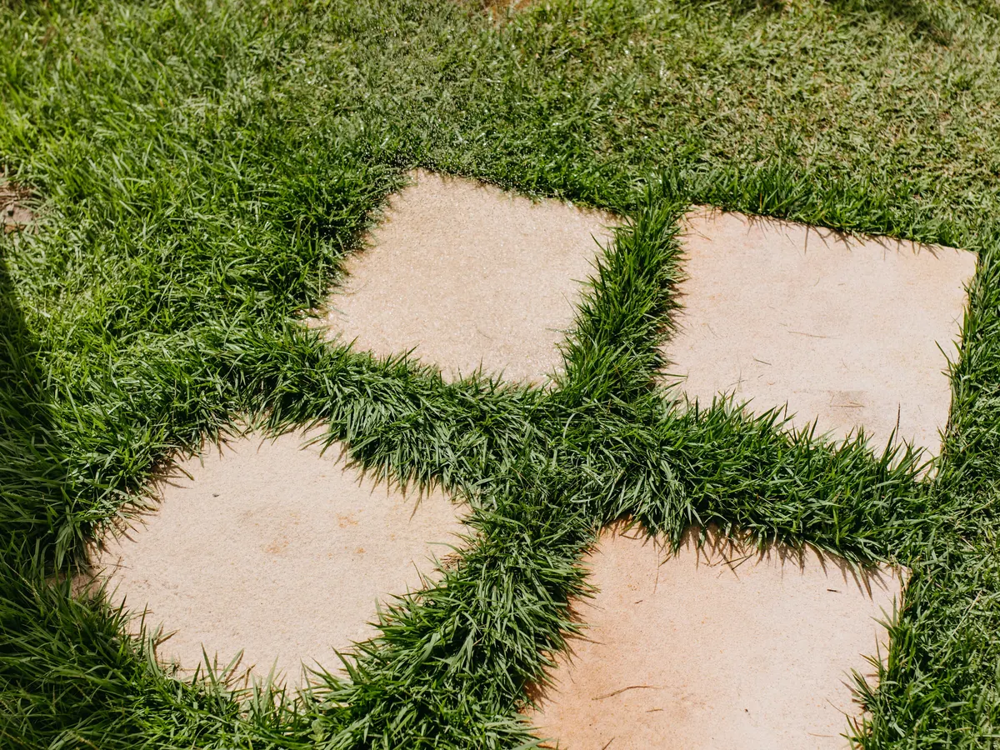

Space to use
Paving & Patios

A well-designed patio can create a practical outdoor space for relaxing, dining and entertaining. We provide patio installation with careful planning around layout, paths, seating areas, edging and drainage.
We prepare the ground properly and lay each patio on a strong sub-base for a durable, long-lasting finish. Paving materials, slab sizes and laying patterns can be chosen to suit the style of your garden and home.